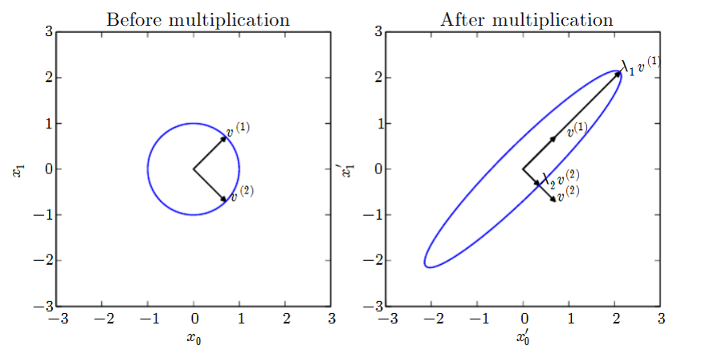
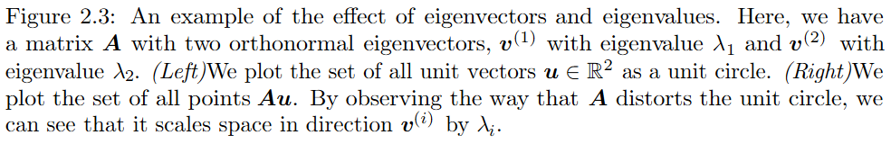

Eigenpairs
\[ A\vec{e} = \lambda \vec{e} \]


\[ M = Q\Lambda Q^{-1} \]
M is interpreted as the combination of three specific transformations
Computing its inverse, \(M^{-1}\), is now much simpler
M. inversion solves linear systems of linear equations
\[ M\vec{x} = \vec{v} \]
When M and \(\vec{v}\) are know, we find \(\vec{x}\)
\[ M^{-1}M\vec{x} = M^{-1}\vec{v} \]
\[ I\vec{x} = M^{-1}\vec{v} \]
The solution \(\vec{x} = M^{-1}\vec{v}\) gives us the regression coefficients that define the linear regression model.
To estimate a new datapoint, say, \([a, b]\), just plug in the solution: \(\hat{y} = [a, b]\cdot\vec{x}\)
Regression seen as solving the underlying linear system by matrix inversion
Textbook inversion takes \(\Theta(n^3)\) operations: unfeasible
Advanced a. in Numpy run in \(\Theta(n^2)\) (but check for numeric issues)
Compute \(M^{-1}\) once then store and re-use it for different \(\vec{v}\)
Thanks to properties of the Q matrix, where each column is an e-vector, inversion is simplified
\(M = Q\Lambda Q^{-1}\)
\(M^{-1} = (Q\Lambda Q^{-1})^{-1}\)
\(M^{-1} = Q^{-1}\Lambda^{-1} (Q^{-1})^{-1}\)
\(M^{-1} = Q^{-1}\Lambda^{-1} Q\)
where \(\Lambda^{-1}\) is obtained by simply substituing each \(\lambda_i\) on the diagonal with \(\frac{1}{\lambda_i}\)
For rectangular matrices \(A_{(m \times n)}\) eigendecomposition is not defined
Instead, SVD provides a similar decomposition of the data matrix
The procedure is more complex
Until 1955, no general procedure for inverting rectangular m. was available
\(A_{(m \times n)}\)
There are m points (rows) inside a space of n dimensions (columns)
Each point is represented by an m-dimensional row vector
Each dimension is represented by an n-dimensional vector
By multiplying a rectangular matrix by its transpose we obtain a square matrix that reprents an ‘internal’ relationship:
\(M_{(m \times m)} = A_{(m \times n)}\times A^T_{(n \times m)}\)
\(N_{(n \times n)} = A^T_{(n \times m)}\times A_{(m \times n)}\)
Let’s extract their respective eigenpairs.
\(U_{(m \times m)}\): columns made up of eigenvectors of \(M_{(m \times m)} = A_{(m \times n)}\times A^T_{(n \times m)}\)
notice that e-vectors are always orthogonal with each other: \(\vec{U_i}^T \cdot \vec{U_j}=0\ (i\neq j)\)
this will simplify computation
However, some further orthogonal column will have to be introduced with external methods as only \(min(m, n)\) non-zero eigenpairs can be obtained.
\(V_{(n \times n)}\): colums made up of eigenvectors of \(N_{(n \times n)}\)
Again, e-vectors are orthogonal to each other: \(\vec{V_i}^T \cdot \vec{V_j}=0\ (i\neq j)\)
dispose the eigenvalues of N on the main diagonal of a rectangular m. that will be 0 everywhere else
\(D_{(n \times m)}\) where \(D_{ii}=\sigma_i\) are the singular values
\(\sigma_i = \sqrt{\lambda_i}\) the i-th e-value of \(N=A^T A\)
(it can also be constructed with \(M=AA^T\))
\[ A_{(n \times m)} = U_{(n \times n)} D_{(n \times m)} V^T_{(m \times m)} \]
U is a orthogonal m. of left-singular (col.) vectors
D is a diagonal matrix of singular values
V is a orthogonal m. of right-singular (col.) vectors
Please see \(\S\) 2.7 of [Goodfellow et al.]
SVD generalises eigen-decomposition:
any real matrix has one
even non-square m. admit one
overconstrained systems (m>n) can now be solved
\(A_{(3 \times 2)}\vec{x} = \vec{v}\)
Focus on
\(A\, = \begin{pmatrix} 1 & 2\\ 3 & 4\\ 5 & 6 \end{pmatrix}\)
\[AA^T = \begin{pmatrix} 1 & 2\\ 3 & 4\\ 5 & 6 \end{pmatrix} \begin{pmatrix} 1 & 3 & 5\\ 2 & 4 & 6 \end{pmatrix} = \begin{pmatrix} 5 & 11 & 17\\ 11 & 25 & 39\\ 17 & 39 & 61 \end{pmatrix}\]
Extract the eigenpairs: \(\lambda_1 = 91\), \(v_1 = [0.15, 0.33, 0.52]\)
Unfortunately, \(\lambda_1 = \lambda_2 = 0\): we need a couple more orthogonal vectors to make up our matrix U
\[A^TA = \begin{pmatrix} 1 & 3 & 5\\ 2 & 4 & 6 \end{pmatrix} \begin{pmatrix} 1 & 2\\ 3 & 4\\ 5 & 6 \end{pmatrix} = \begin{pmatrix} 35 & 44\\ 44 & 56 \end{pmatrix}\]
The eigenvalues are \(\lambda_1 = 90.54\) and \(\lambda_2 = 0.26\)
The singular values are \(\sigma_1 = \sqrt(\lambda_1) = 9.54\) and \(\sigma_2 = \sqrt(\lambda_2) = 0.51\)
\[D = \begin{pmatrix} 9.53 & 0\\ 0 & 0.51 \\ 0 & 0 \end{pmatrix}\]
Putting it all together:
\[A = \begin{pmatrix} 0.15 & 0.231 & 0.882\\ 0.33 & 0.527 & 0.216\\ 0.52 & 0.823 & -0.451 \end{pmatrix} \begin{pmatrix} 9.53 & 0\\ 0 & 0.51 \\ 0 & 0 \end{pmatrix} \begin{pmatrix} 0.62 & 0.79\\ -0.79 & 0.62 \end{pmatrix}\]
Even though this formulation is far from the original and not easily interpreted, it has good properties.
Ian Goodfellow, Yoshua Bengio and Aaron Courville: Deep Learning, MIT Press, 2016.
available in HTML and PDF; it is a refresher of notation and properties: no examples and no exercises.
It can be read in the background.
Phase 1: read §§ 2.1—2.7, then § 2.11.
Phase 2: read §§ 2.8—2.10
solve linear systems
\[ A\vec{x} = \vec{v} \]
for non-square (rectangular) matrices:
n >m: the problem is overconstrained (no solution?)
n < m: the problem is overparametrized (many sols.?)
If A is squared (m=n) and non-singular (\(|A|\neq 0\)) then
\[ A\vec{x} = \vec{v} \]
\[ A^{-1}A\vec{x} = A^{-1} \vec{v} \]
\[ I\vec{x} = A^{-1} \vec{v} \]
Compute \(A^{-1}\) once, run for different values of \(\vec{v}\)
Given A_{(n m)}, Penrose seeks a matrix \(A^+\) that would work the same as the left inverse:
\(A^+ A \approx I\)
strenghten up the main diagonal before inversion:
\[ A^+ = \lim_{\alpha\rightarrow 0} (A^TA + \alpha I)^{-1}A^T \]
Thanks to \(A^+\), over-constrained linear systems can now be solved (w. approximation)
for the decomposition
\[ A = UDV^T \]
\[ A^+ = VD^+ U^T \]
where \(D^+\), such that \(D^+D=I\) is easy to calculate: D is diagonal.
Does \(A^+ A \approx I\)?
Yes, because U and V are s. t. \(U^T U = VV^T=I\).
\[ VD^+ U^T \cdot UDV^T\ = \]
\[ VD^+ I DV^T\ = \]
\[ VD^+ DV^T \ = \]
\[ V I V^T = V V^T = I \]